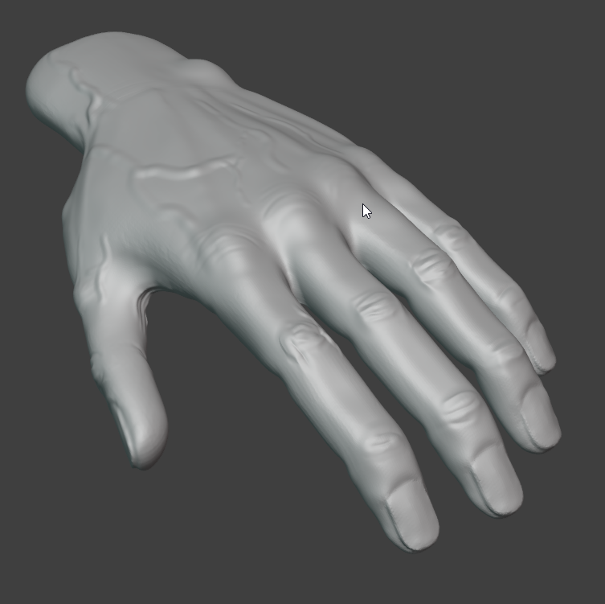
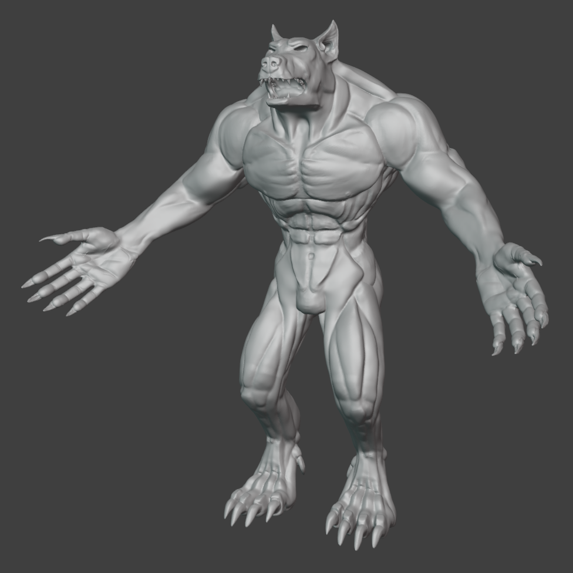

Werewolf Character Creation in Blender
Posted by Dobbenberg, Wouter on 2024-08-06
In the past, I've created two models: one using ZBrush and another with Maya. This time, I decided to give Blender sculpting a go. My goal is to create a usable character for my game development project and a quality model for my portfolio.
Grey Boxing
Initially, I started by collecting reference pictures from the internet to find good concepts for inspiration. With those sorted out, I began grey boxing the general shape of the character using very simplistic shapes. These shapes serve as the basis for sculpting later in the pipeline. Since this was my first time using Blender, the grey boxing wasn't very accurate, but it did the job. You can see an example of the grey boxing below.
Detailing
With the grey boxing finished, it was time to start the detailing work using Blender's sculpting tools. The primary tools I used were the clay strips, smooth, and crease brushes. I referred mostly to pictures of the Hulk for muscle references. The hands were some of the most challenging shapes to create. I decided to size the hands up because sculpt brushes tend to yield worse results on smaller models. After detailing, I resized and merged them with the main mesh. Below, you can see the hands and the final sculpt.


Posted by Dobbenberg, Wouter on 2024-07-31
Now that the sculpt is finished, it's time to get the model into a more performance-friendly state for use in actual game development.
Low Resolution Modeling
To make my model run efficiently in any game engine, I needed to perform retopology. Retopology involves manually redoing all the vertices, edges, and faces to create a consistent and optimized mesh, reducing the vertex and face count. I used an additional plugin to help with retopology:- BSurfaces: This plugin made it easier to edit my topology. I primarily relied on its ability to display the retopology always on top of the original mesh. I also applied mirror and shrink wrap modifiers using the BSurfaces plugin.
Subdividing and Smoothing
- Blender Sculpt Tools: Besides BSurfaces, I used the Slide Relax smooth brush to evenly space out the topology after the initial manual positioning of the vertices. This resulted in a more uniform topology, allowing for better subdivision in higher-resolution models. In the end, I created three models based on the same initial sculpt: low, mid, and high resolution. Each higher-resolution model is a subdivided version of the lower one. The poly counts are 5k, 20k, and 80k, respectively.